AD 網域控制站啟用 LDAPS 指南
2026-01-09 | Microsoft本文紀錄如何透過 Windows Enterprise CA 產生憑證，並於網域控制站 (DC) 安裝與啟用 LDAP over SSL (LDAPS)，最後使用 ldp.exe 驗證連線設定。
1. 環境說明#
本文操作示範所使用的系統環境如下：
- Windows 版本：Windows Server 2022 Standard
- Windows CA 類型：Enterprise CA (企業級 CA)
2. 憑證條件#
LDAPS 所使用的憑證需符合以下條件：
- 儲存位置：存放於 Local Computer\Personal 或 NTDS\Personal，且必須包含私密金鑰。
- 增強金鑰用法 (EKU)：須含有 Server Authentication (1.3.6.1.5.5.7.3.1)。
- 主體名稱：Subject 或 SAN (主體別名) 需包含網域控制站 (DC) 的 FQDN。
- 憑證鏈結：憑證鏈必須完整，且 Client 與 DC 都必須信任 Root CA。
- 安全性規範：沒有啟用強式私鑰保護，且 CSP/KSP 是 Schannel 所支援的。
3. 建立憑證範本#
首先，我們需要在 CA 上建立一個專供 LDAPS 使用的範本。
{kind=link}
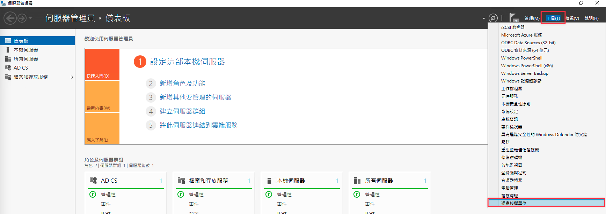
{kind=link}
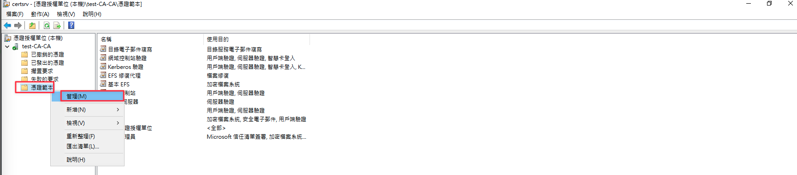
{kind=link}
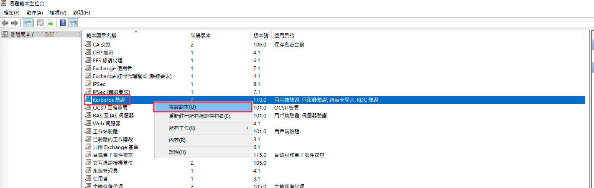
範本顯示名稱可根據需求自定義，有效期間及更新間隔則依組織需求更改。
{kind=link}
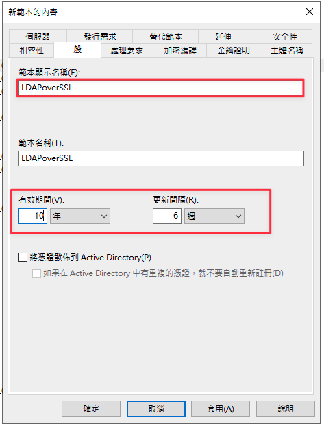
在「要求處理」標籤頁中，務必勾選允許匯出私密金鑰。
{kind=link}
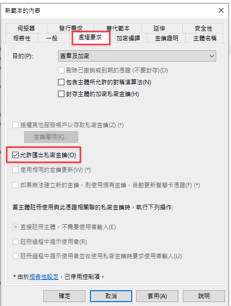
在「主體名稱」標籤頁中，需勾選 DNS 名稱 及 服務主體名稱 (SPN)。
{kind=link}
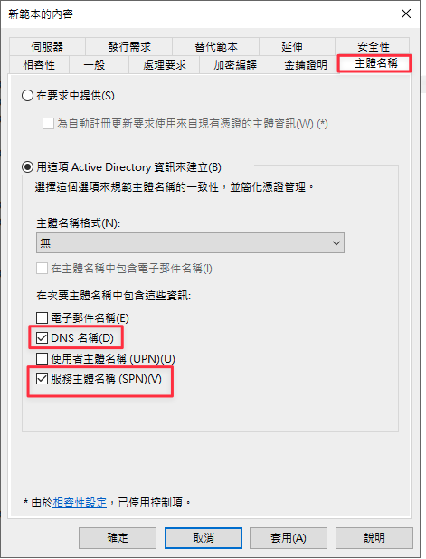
4. 發佈範本#
範本建立完成後，需將其發佈才能供申請使用。
{kind=link}
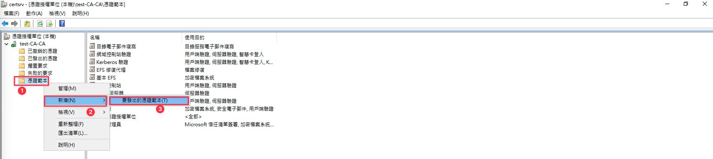
{kind=link}
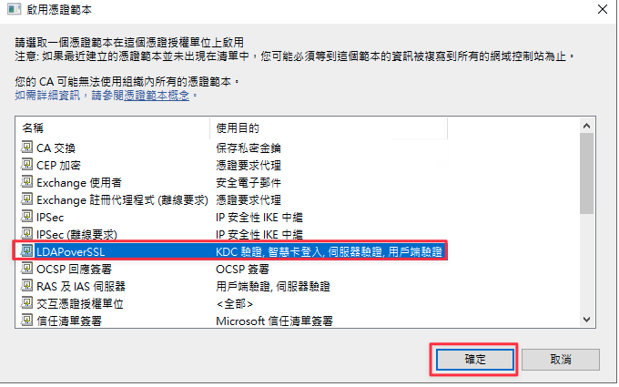
5. 憑證請求#
請於網域控制站執行憑證請求。若環境中有多台網域控制站均要開啟 LDAPS 功能，則需要在每一台機器上分別執行一次。
於網域控制站執行 mmc 並新增憑證管理單元。
{kind=link}
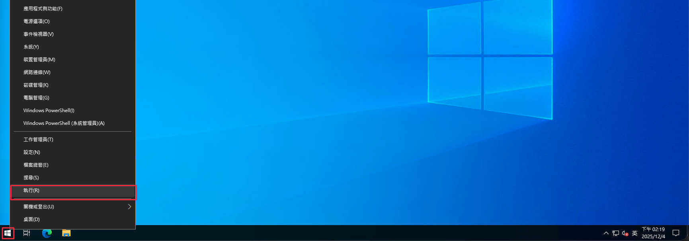
{kind=link}
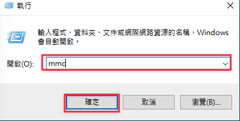
{kind=link}
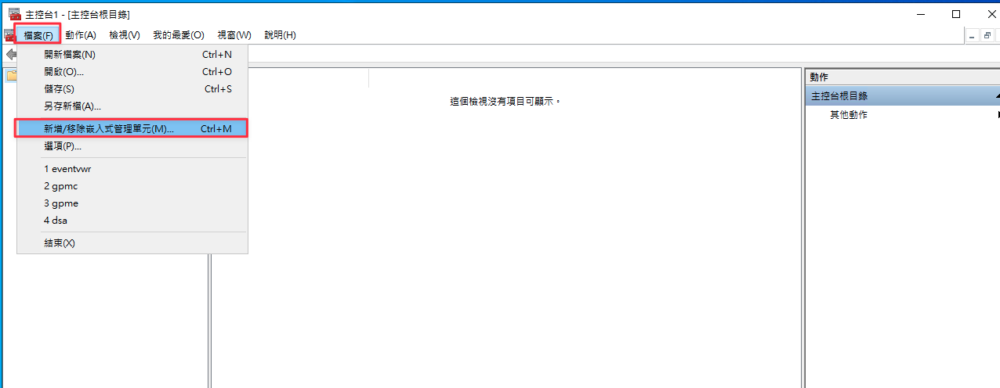
{kind=link}
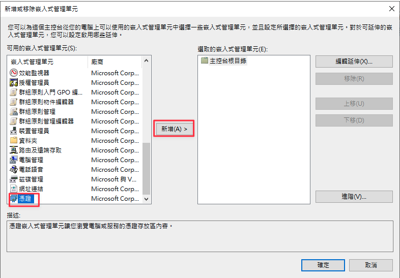
{kind=link}
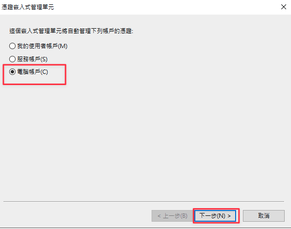
{kind=link}
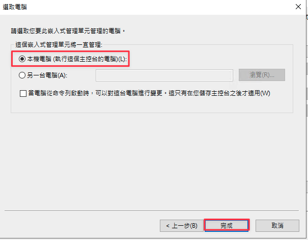
{kind=link}
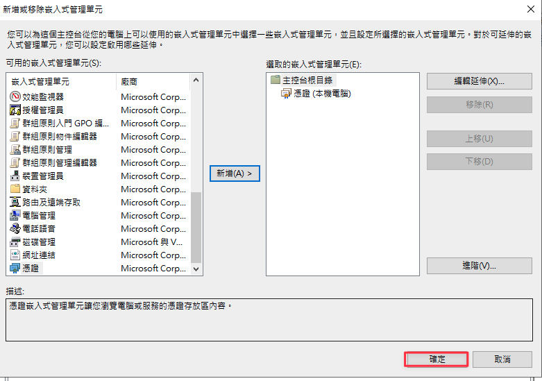
接著在「個人」憑證資料夾中，執行「要求新憑證」。
{kind=link}
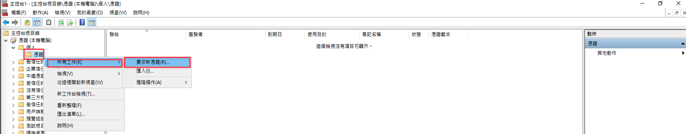
{kind=link}
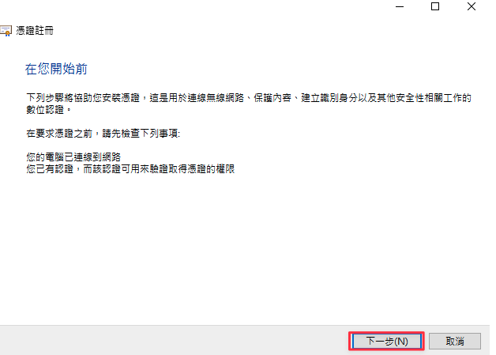
{kind=link}
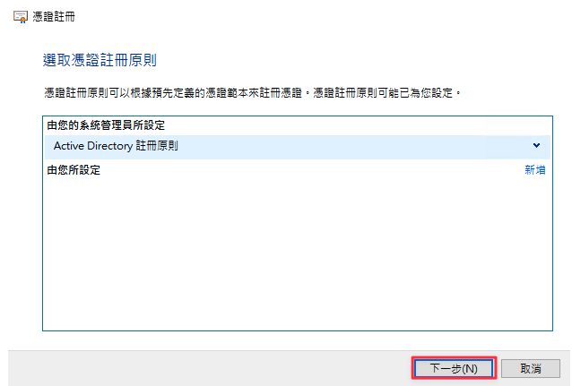
勾選剛才發佈的 LDAPS 範本進行申請。
{kind=link}
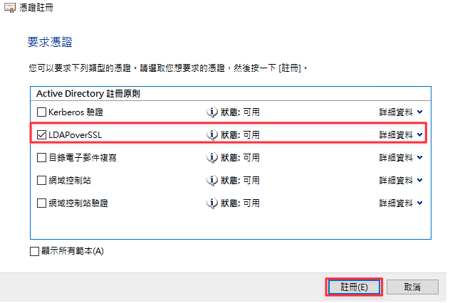
{kind=link}
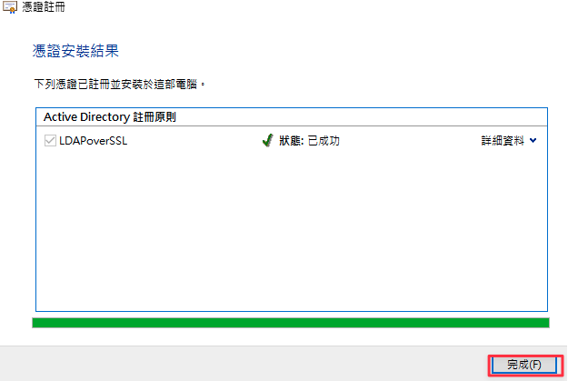
{kind=link}
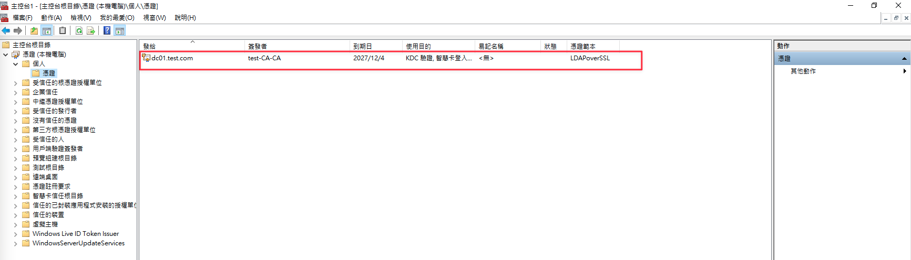
6. 測試#
憑證安裝後，可以於網域控制站使用 ldp.exe 測試 LDAPS 是否可以正常連線。
{kind=link}
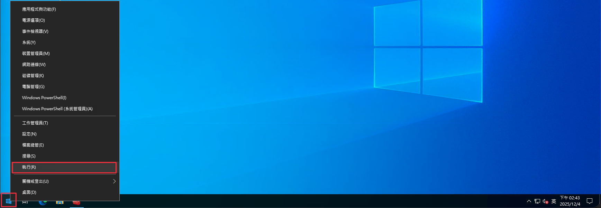
{kind=link}
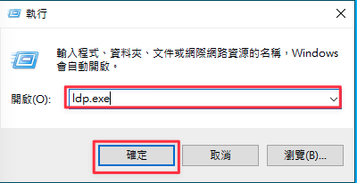
點選選單中的「連線」->「連線...」。
{kind=link}
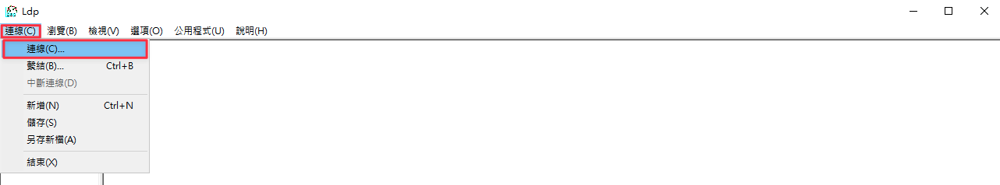
伺服器填寫 localhost，連接埠填寫 636，並勾選 SSL，點擊確認。
{kind=link}
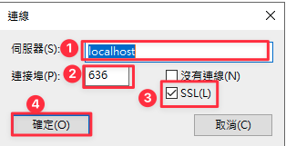
驗證結果：
若連線成功，畫面將會顯示相關的憑證與連線資訊。
{kind=link}
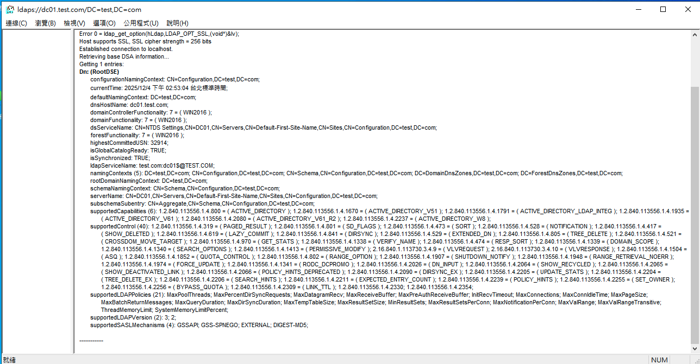
若連線失敗，則會出現以下錯誤畫面。
{kind=link}
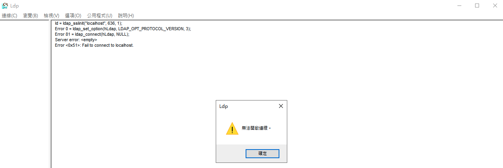